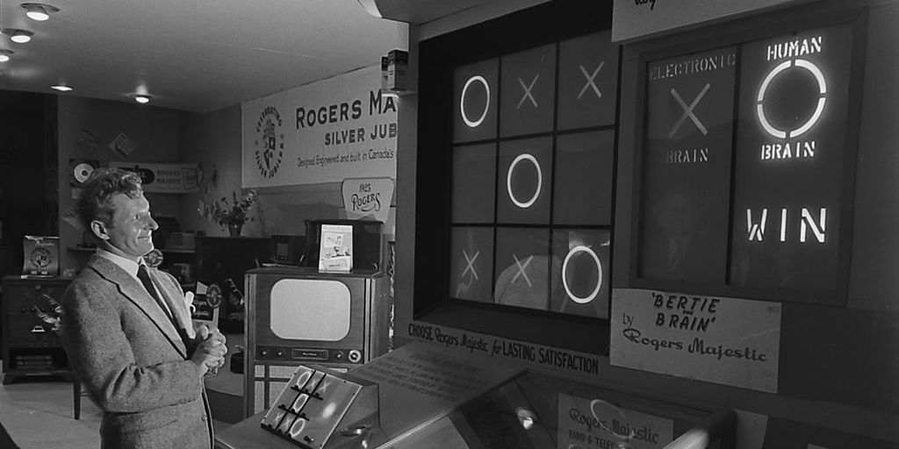

Quel est le premier jeu vidéo ?
Les jeux vidéo n'ont pas cessé d'évoluer avec le temps, ils existent depuis quarante ans environ et depuis cette date des millions de jeux ont été inventé et commercialisé partout dans le monde.
Le premier jeu vidéo s’appelle Bertie the Brain crée en 1950 par Josef Kates. Ce jeu vidéo était une machine d’une taille impressionnante de quare mètres de haut. Ce jeu consistait à rejouer au jeu de Morpion, qui est un jeu d’enfant. De nombreuses personnes sont venues admirer cette machine lors de l’exposition nationale canadienne.
A notre époque, cette machine n’est pas forcément très « amusante » pour les jeunes mais pour l’époque c’était un petit « miracle technologique ».
Malgré la représentation technologique que cette machine représentait dans les années 1950, elle n'a pas eu le succès attendu.
